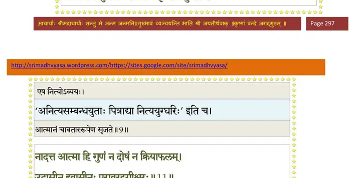
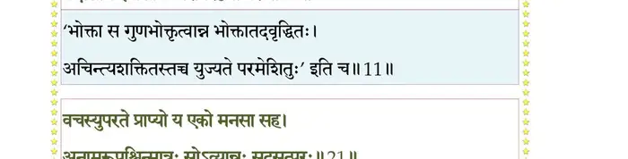
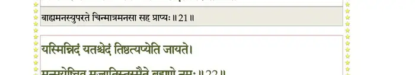
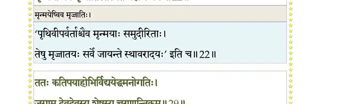
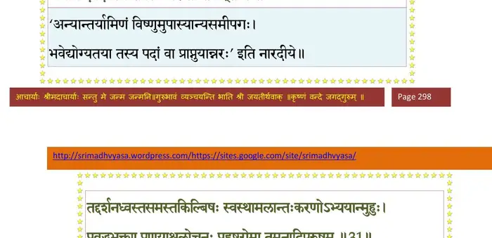
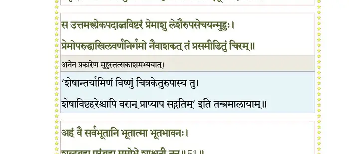
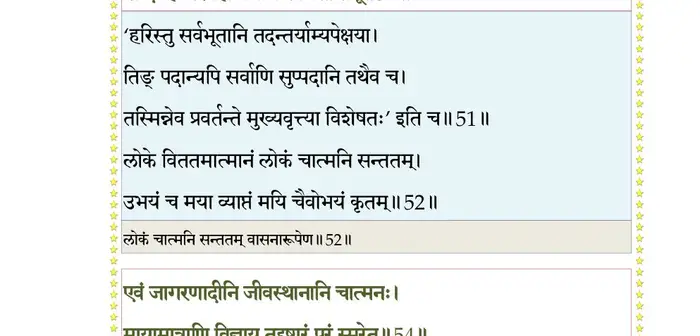
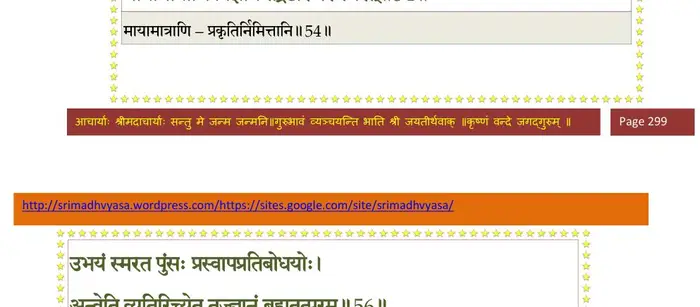
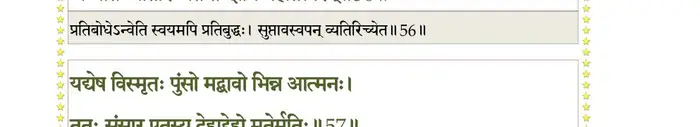
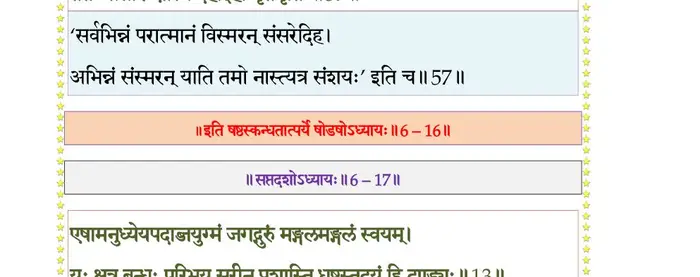

स्कन्ध 6 · अध्याय 16
श्लोक १
श्रीशुक उवाच–
अथ देवऋषी राजन् सम्परेतं नृपात्मजम् ।
दर्शयित्वेति होवाच ज्ञातीनामनुशोचताम्।। १ ।।
अथ देवऋषी राजन् सम्परेतं नृपात्मजम् ।
दर्शयित्वेति होवाच ज्ञातीनामनुशोचताम्।। १ ।।
श्लोक २
नारद उवाच–
जीवात्मन् पश्य भद्रं ते मातरं पितरं च ते ।
सुहृदो बान्धवांस्तप्तान् शुचा त्वत्कृतया भृशम्।। २ ।।
जीवात्मन् पश्य भद्रं ते मातरं पितरं च ते ।
सुहृदो बान्धवांस्तप्तान् शुचा त्वत्कृतया भृशम्।। २ ।।
श्लोक ३
कलेवरं स्वमाविश्य शेषमायुः सुहृद्वृतः ।
भुङ्क्ष्व भोगान् पितृप्राप्तानधितिष्ठ नृपासनम्।। ३ ।।
भुङ्क्ष्व भोगान् पितृप्राप्तानधितिष्ठ नृपासनम्।। ३ ।।
श्लोक ४
जीव उवाच–
कस्मिन् जन्मन्यमी ब्रह्मन् पितरो मातरोऽभवन् ।
कर्मभिर्भ्राम्यमाणस्य देवतिर्यङ्नृयोनिषु।। ४ ।।
कस्मिन् जन्मन्यमी ब्रह्मन् पितरो मातरोऽभवन् ।
कर्मभिर्भ्राम्यमाणस्य देवतिर्यङ्नृयोनिषु।। ४ ।।
श्लोक ५
बन्धुज्ञात्यरिमध्यस्थमित्रोदासीनविद्विषः ।
सर्व एव हि सर्वेषां भवन्ति क्रमशो मिथः।। ५ ।।
सर्व एव हि सर्वेषां भवन्ति क्रमशो मिथः।। ५ ।।
श्लोक ६
यथा वस्तूनि पण्यानि हेमादीनि ततस्ततः ।
पर्यटन्ति नरेष्वेवं जीवो योनिषु कर्तृषु।। ६ ।।
पर्यटन्ति नरेष्वेवं जीवो योनिषु कर्तृषु।। ६ ।।
श्लोक ७
नित्यस्यार्थस्य संबन्धो ह्यनित्यो दृश्यते नृषु ।
यावद् यस्य हि संबन्धो ममत्वं तावदेव हि।। ७ ।।
यावद् यस्य हि संबन्धो ममत्वं तावदेव हि।। ७ ।।
श्लोक ८
एवं योनिगतो जीवः स नित्यो निरहंकृतः ।
यावद् यत्रोपलभ्येत तावत् स्वत्वं हि तस्य तत्।। ८ ।।
यावद् यत्रोपलभ्येत तावत् स्वत्वं हि तस्य तत्।। ८ ।।
श्लोक ९
एष नित्योऽव्ययः सूक्ष्म एकः सर्वाश्रयः स्वदृक् ।
आत्ममायागुणैर्विश्वमात्मानं सृजते प्रभुः।। ९ ।।
आत्ममायागुणैर्विश्वमात्मानं सृजते प्रभुः।। ९ ।।
भागवततात्पर्यनिर्णय

श्लोक १०
न ह्यस्यातिप्रियः कश्चिन्नाप्रियः स्वः परोऽपि वा ।
एकः सर्वधियां द्रष्टा कर्तॄणां गुणदोषयोः।। १० ।।
एकः सर्वधियां द्रष्टा कर्तॄणां गुणदोषयोः।। १० ।।
श्लोक ११
नादत्त आत्मा हि गुणं न दोषं न क्रियाफलम् ।
उदासीन इवासीनः परावरदृगीश्वरः।। ११ ।।
उदासीन इवासीनः परावरदृगीश्वरः।। ११ ।।
भागवततात्पर्यनिर्णय

श्लोक १२
श्रीशुक उवाच–
इत्युदीर्य गतो जीवो ज्ञातयस्तस्य ते तदा ।
विस्मिता मुमुचुः शोकं(स्नेहं)छित्वाऽऽत्मस्नेहशृङ्खलाम्।। १२ ।।
इत्युदीर्य गतो जीवो ज्ञातयस्तस्य ते तदा ।
विस्मिता मुमुचुः शोकं(स्नेहं)छित्वाऽऽत्मस्नेहशृङ्खलाम्।। १२ ।।
श्लोक १३
निर्हृत्य ज्ञातयो ज्ञातेर्देहं कृत्वोचिताः क्रियाः ।
तत्यजुर्दुस्त्यजं स्नेहं शोकमोहभयार्तिदम्।। १३ ।।
तत्यजुर्दुस्त्यजं स्नेहं शोकमोहभयार्तिदम्।। १३ ।।
श्लोक १४
बालघ्नयो व्रीडितास्तत्र बालहत्याहतप्रभाः ।
बालहत्याव्रतं चेरुर्ब्राह्मणैर्यन्निरूपितम् ।
यमुनायां महाराज स्मरन्त्यो द्विजभाषितम्।। १४ ।।
बालहत्याव्रतं चेरुर्ब्राह्मणैर्यन्निरूपितम् ।
यमुनायां महाराज स्मरन्त्यो द्विजभाषितम्।। १४ ।।
श्लोक १५
स इत्थं प्रतिबुद्धात्मा चित्रकेतुर्द्विजोक्तिभिः ।
गृहान्धकूपान्निष्क्रान्तः सरःपङ्कादिव द्विपः।। १५ ।।
गृहान्धकूपान्निष्क्रान्तः सरःपङ्कादिव द्विपः।। १५ ।।
श्लोक १६
कालिन्द्यां विधिवत् स्नात्वा कृतपुण्यजलक्रियः ।
मौनेन संयतप्राणो ब्रह्मपुत्राववन्दत।। १६ ।।
मौनेन संयतप्राणो ब्रह्मपुत्राववन्दत।। १६ ।।
श्लोक १७
अथ तस्मै प्रपन्नाय भक्ताय प्रयतात्मने ।
भगवान् नारदः प्रीतो विद्यामेतामुवाच ह।। १७ ।।
भगवान् नारदः प्रीतो विद्यामेतामुवाच ह।। १७ ।।
श्लोक १८
नारद उवाच–
नमस्तुभ्यं भगवते वासुदेवाय धीमहि ।
प्रद्युम्नायानिरुद्धाय नमः सङ्कर्षणाय च।। १८ ।।
नमस्तुभ्यं भगवते वासुदेवाय धीमहि ।
प्रद्युम्नायानिरुद्धाय नमः सङ्कर्षणाय च।। १८ ।।
श्लोक १९
नमो विज्ञानमात्राय परमानन्द(मूर्तये)रूपिणे ।
आत्मारामाय शान्ताय निवृत्तद्वैतदृष्टये।। १९ ।।
आत्मारामाय शान्ताय निवृत्तद्वैतदृष्टये।। १९ ।।
श्लोक २०
आत्मानन्दानुभूत्यैव सम्यक्त्यक्तोर्मये नमः ।
हृषीकेशाय महते नमस्तेऽनन्तमूर्तये।। २० ।।
हृषीकेशाय महते नमस्तेऽनन्तमूर्तये।। २० ।।
श्लोक २१
वचस्युपरते प्राप्य य एको मनसा सह ।
अनामरूपचिन्मात्रः सोऽव्ययः(व्यान्नः) सदसत्परः।। २१ ।।
अनामरूपचिन्मात्रः सोऽव्ययः(व्यान्नः) सदसत्परः।। २१ ।।
भागवततात्पर्यनिर्णय

श्लोक २२
यस्मिन्निदं यतश्चेदं तिष्ठत्यप्येति जायते ।
मृन्मयेष्विव मृज्जातिस्तस्मै ते ब्रह्मणे नमः।। २२ ।।
मृन्मयेष्विव मृज्जातिस्तस्मै ते ब्रह्मणे नमः।। २२ ।।
भागवततात्पर्यनिर्णय

श्लोक २३
यन्न स्पृशन्ति न विदुर्मनोबुद्धीन्द्रयासवः ।
अन्तर्बहिश्च विततं व्योमवत् तं नतोऽस्म्यहम्।। २३ ।।
अन्तर्बहिश्च विततं व्योमवत् तं नतोऽस्म्यहम्।। २३ ।।
श्लोक २४
देहेन्द्रियप्राणमनोधियोऽमी यदंशविद्धाः प्रचरन्ति कर्मसु ।
नैवान्यदा लोहमिव प्रतप्तं स्थानेषु तद् द्रष्ट्रपदेशमेमि।। २४ ।।
नैवान्यदा लोहमिव प्रतप्तं स्थानेषु तद् द्रष्ट्रपदेशमेमि।। २४ ।।
श्लोक २५
ओं नमो भगवते महापुरुषाय महानुभावाय महाविभूतये सकल-सात्वतपरिवृढनिकरकरकमलकुड्मलोपलालितचरणारविन्दयुगल परम परमेष्ठिन् नमस्ते ।। २५ ।।
श्लोक २६
श्रीशुक उवाच–
भक्तायैतां प्रपन्नाय विद्यामादिश्य नारदः ।
ययावङ्गिरसा साकं धाम स्वायम्भुवं विभो।। २६ ।।
भक्तायैतां प्रपन्नाय विद्यामादिश्य नारदः ।
ययावङ्गिरसा साकं धाम स्वायम्भुवं विभो।। २६ ।।
श्लोक २७
चित्रकेतुस्तु विद्यां तां यथा नारदभाषिताम् ।
धारयामास सप्ताहमब्भक्षः सुसमाहितः।। २७ ।।
धारयामास सप्ताहमब्भक्षः सुसमाहितः।। २७ ।।
श्लोक २८
ततश्च सप्तरात्रान्ते विद्यया धार्यमाणया ।
विद्याधराधिपत्यं स लेभेऽप्रतिहतं नृपः।। २८ ।।
विद्याधराधिपत्यं स लेभेऽप्रतिहतं नृपः।। २८ ।।
श्लोक २९
ततः कतिपयाहोभिर्विद्ययेद्धमनोगतिः ।
जगाम देवदेवस्य शेषस्य चरणान्तिकम्।। २९ ।।
जगाम देवदेवस्य शेषस्य चरणान्तिकम्।। २९ ।।
भागवततात्पर्यनिर्णय

श्लोक ३०
मृणालगौरं शितिवाससं स्फुरत्किरीटकेयूरकटित्रकङ्कणम् ।
प्रसन्नवक्त्रारुणलोचनं वृतं ददर्श सिद्धेश्वरमण्डलैः प्रभुम्।। ३० ।।
प्रसन्नवक्त्रारुणलोचनं वृतं ददर्श सिद्धेश्वरमण्डलैः प्रभुम्।। ३० ।।
श्लोक ३१
तद्दर्शनध्वस्तसमस्तकिल्बिषः स्वच्छा(स्था)मलान्तःकरणोऽभ्ययान्मुहुः ।
प्रवृद्धभक्त्याऽऽप्रणयाश्रुलोचनः प्रहृष्टरोमा तमनादिपूरुषम्।। ३१ ।।
प्रवृद्धभक्त्याऽऽप्रणयाश्रुलोचनः प्रहृष्टरोमा तमनादिपूरुषम्।। ३१ ।।
भागवततात्पर्यनिर्णय

श्लोक ३२
स उत्तमश्लोकपदाब्जविष्टरं प्रेमाश्रुलेशैरुपसेचयन् मुहुः ।
प्रेमोपरुद्धाखिलवर्णनिर्गमो नैवाशकत् तं प्रसमीडितुं चिरम्।। ३२ ।।
प्रेमोपरुद्धाखिलवर्णनिर्गमो नैवाशकत् तं प्रसमीडितुं चिरम्।। ३२ ।।
श्लोक ३३
ततः समाधाय मनो मनीषया बभाष एतत् प्रतिलब्धवाग्रसः ।
नियम्य सर्वेन्द्रियबाह्यवर्तनं जगद्गुरुं सात्वतशास्त्रविग्रहम्।। ३३ ।।
नियम्य सर्वेन्द्रियबाह्यवर्तनं जगद्गुरुं सात्वतशास्त्रविग्रहम्।। ३३ ।।
श्लोक ३४
चित्रकेतुरुवाच–
अजित जितः सममतिभिः साधुभिर्भवान् जितात्मभिर्भवता ।
विजितास्तेऽपि च भजतामकामा(त्म)नां य आत्मदोऽतिकरुणः ।। ३४ ।।
अजित जितः सममतिभिः साधुभिर्भवान् जितात्मभिर्भवता ।
विजितास्तेऽपि च भजतामकामा(त्म)नां य आत्मदोऽतिकरुणः ।। ३४ ।।
श्लोक ३५
तव विभवः खलु भगवन् जगदुदयस्थितिलयावनादीनि ।
विश्वसृजस्तेंऽशांशास्तत्र मृषा स्पर्धन्ति पृथगभिमत्या।। ३५ ।।
विश्वसृजस्तेंऽशांशास्तत्र मृषा स्पर्धन्ति पृथगभिमत्या।। ३५ ।।
श्लोक ३६
परमाणुपरममहतोस्त्वमाद्यन्तान्तरवर्ती त्रयविधुरः ।
आदावन्ते च सत्त्वानां यद् ध्रुवं तदेवान्तरकालेऽपि।। ३६ ।।
आदावन्ते च सत्त्वानां यद् ध्रुवं तदेवान्तरकालेऽपि।। ३६ ।।
श्लोक ३७
क्षित्यादिभिरेष किलावृतः सप्तभिर्दशगुणोत्तरैराण्डकोशः ।
यत्र भगवत्यणुभ्योऽणुकल्पः सहाण्डकोटिभिस्तदनन्तम्।। ३७ ।।
यत्र भगवत्यणुभ्योऽणुकल्पः सहाण्डकोटिभिस्तदनन्तम्।। ३७ ।।
श्लोक ३८
विषयतृषो नरपशवो य उपासते विभूतीर्न परं त्वाम् ।
तेषामाशिष ईश तदनु विनश्यन्ति यथाऽराजकुलम्।। ३८ ।।
तेषामाशिष ईश तदनु विनश्यन्ति यथाऽराजकुलम्।। ३८ ।।
श्लोक ३९
कामधियस्त्वयीश रचिता न पुनारोहन्ति यथा करम्भबीजानि ।
ज्ञानात्मन्यगुणमये गुणगणतोऽस्य द्वन्द्वजालानि।। ३९ ।।
ज्ञानात्मन्यगुणमये गुणगणतोऽस्य द्वन्द्वजालानि।। ३९ ।।
श्लोक ४०
जितमजित तदा भवता यदाऽऽह भागवतं धर्ममनवद्यम् ।
निष्किञ्चना ये मुनय आत्मारामा यमुपासतेऽपवर्गाय।। ४० ।।
निष्किञ्चना ये मुनय आत्मारामा यमुपासतेऽपवर्गाय।। ४० ।।
श्लोक ४१
विषममतिर्न यत्र नृणां त्वमहमिति मम तवेति च योऽन्यत्र ।
विषमधिया रचितः स ह्यशुद्धः क्षयिष्णुरधर्मबहुलः।। ४१ ।।
विषमधिया रचितः स ह्यशुद्धः क्षयिष्णुरधर्मबहुलः।। ४१ ।।
श्लोक ४२
कः क्षेमो निजपरयोः कियानर्थः स्वपरद्रुहा धर्मेण ।
स्वद्रोहात् तव कोपः परसम्पीडया च तथाऽधर्मः।। ४२ ।।
स्वद्रोहात् तव कोपः परसम्पीडया च तथाऽधर्मः।। ४२ ।।
श्लोक ४३
न व्यभिचरति तवेक्षा यया ह्यभिहितो भागवतो धर्मः ।
स्थिरचरसत्वकदम्बेष्वपृथग्धियो य उपासते त्वार्याः।। ४३ ।।
स्थिरचरसत्वकदम्बेष्वपृथग्धियो य उपासते त्वार्याः।। ४३ ।।
श्लोक ४४
न हि भगवन्नघटितमिदं त्वद्दर्शनान्नृणामखिलपापक्षयः ।
यन्नामसकृच्छ्रवणात् पुल्कसकोऽपि विमुच्यते संसारात् ।। ४४ ।।
यन्नामसकृच्छ्रवणात् पुल्कसकोऽपि विमुच्यते संसारात् ।। ४४ ।।
श्लोक ४५
अथ भगवन् वयमधुना त्वदवलोकपरिमृष्टाशयमलाः ।
सुरऋषिणा यदुदितं तावकेन कथमन्यथा भवति।। ४५ ।।
सुरऋषिणा यदुदितं तावकेन कथमन्यथा भवति।। ४५ ।।
श्लोक ४६
विदितमनन्त समस्तं तव जगदात्मनो जनैरिहाचरितम् ।
विज्ञाप्यं परमगुरोः कियदिह सवितुरिव खद्योतैः।। ४६ ।।
विज्ञाप्यं परमगुरोः कियदिह सवितुरिव खद्योतैः।। ४६ ।।
श्लोक ४७
नमस्तुभ्यं भगवते सकलजगत्स्थितिलयोदयेशाय ।
दुरवसितात्मगतये कुयोगिनां नमः परमहंसाय।। ४७ ।।
दुरवसितात्मगतये कुयोगिनां नमः परमहंसाय।। ४७ ।।
श्लोक ४८
यं वै श्वसन्तमनु विश्वसृजः श्वसन्ति
यं चेकितार(न)मनुवृत्तय उच्चकन्ति ।
भूमण्डलं सर्षपायति यस्य मूधर्ि्न
तस्मै नमो भगवतेऽस्तु सहस्रमूर्ध्ने।। ४८ ।।
यं चेकितार(न)मनुवृत्तय उच्चकन्ति ।
भूमण्डलं सर्षपायति यस्य मूधर्ि्न
तस्मै नमो भगवतेऽस्तु सहस्रमूर्ध्ने।। ४८ ।।
श्लोक ४९
श्रीशुक उवाच–
संस्तुतो भगवानेवमनन्तस्तमभाषत ।
विद्याधरपतिं प्रीतश्चित्रकेतुं कुरूद्वह ।। ४९ ।।
संस्तुतो भगवानेवमनन्तस्तमभाषत ।
विद्याधरपतिं प्रीतश्चित्रकेतुं कुरूद्वह ।। ४९ ।।
श्लोक ५०
श्रीभगवानुवाच–
यन्नारदाङ्गिरोभ्यां ते व्याहृतं मम शासनम् ।
संसिद्धोऽसि यथा राजन् विद्यया दर्शनाच्च मे।। ५० ।।
यन्नारदाङ्गिरोभ्यां ते व्याहृतं मम शासनम् ।
संसिद्धोऽसि यथा राजन् विद्यया दर्शनाच्च मे।। ५० ।।
श्लोक ५१
अहं वै सर्वभूतानि भूतात्मा भूतभावनः ।
शब्दब्रह्म परं ब्रह्म ममोभे शाश्वती तनू ।। ५१ ।।
शब्दब्रह्म परं ब्रह्म ममोभे शाश्वती तनू ।। ५१ ।।
भागवततात्पर्यनिर्णय

श्लोक ५२
लोकेऽविततमात्मानं लोकं चात्मनि सन्ततम् ।
उभयं च मया व्याप्तं मयि चैवोभयं कृतम् ।। ५२ ।।
उभयं च मया व्याप्तं मयि चैवोभयं कृतम् ।। ५२ ।।
श्लोक ५३
यथा सुषुप्तः पुरुषो विश्वं पश्यति चात्मनि ।
आत्मानमेकदेशस्थं मन्यते स्वप्न उत्थितः ।। ५३ ।।
आत्मानमेकदेशस्थं मन्यते स्वप्न उत्थितः ।। ५३ ।।
श्लोक ५४
एवं जागरणादीनि जीवस्थानानि चात्मनः ।
मायामात्राणि विज्ञाय तद्द्रष्टारं परं स्मरेत्।। ५४ ।।
मायामात्राणि विज्ञाय तद्द्रष्टारं परं स्मरेत्।। ५४ ।।
भागवततात्पर्यनिर्णय

श्लोक ५५
येन प्रसुप्तः पुरुषः स्वापं वेदात्मनस्तदा ।
सुखं च निर्गुणं ब्रह्म तमात्मानमवैहि माम्।। ५५ ।।
सुखं च निर्गुणं ब्रह्म तमात्मानमवैहि माम्।। ५५ ।।
श्लोक ५६
उभयं स्मरतः पुंसः प्रस्वापप्रतिबोधयोः ।
अन्वेति व्यतिरिच्येत तज्ज्ञानं ब्रह्म तत् परम् ।। ५६ ।।
अन्वेति व्यतिरिच्येत तज्ज्ञानं ब्रह्म तत् परम् ।। ५६ ।।
भागवततात्पर्यनिर्णय

श्लोक ५७
यद्येष विस्मृतः पुंसो मद्भावो भिन्न आत्मनः ।
ततः संसार एतस्य(एकस्य) देहाद् देहो मृतेर्मृतिः।। ५७ ।।
ततः संसार एतस्य(एकस्य) देहाद् देहो मृतेर्मृतिः।। ५७ ।।
भागवततात्पर्यनिर्णय

श्लोक ५८
लब्ध्वेह मानुषीं योनिं ज्ञानविज्ञानसम्भवाम् ।
आत्मानं यो न बुध्द्येत न क्वचित् क्षेममाप्नुयात् ।। ५८ ।।
आत्मानं यो न बुध्द्येत न क्वचित् क्षेममाप्नुयात् ।। ५८ ।।
श्लोक ५९
स्मृत्वेहायां परिक्लेशं ततः फलविपर्ययम् ।
नोभयं चाप्यनीहायां पश्यंस्तद् विरमेत् कविः ।। ५९ ।।
नोभयं चाप्यनीहायां पश्यंस्तद् विरमेत् कविः ।। ५९ ।।
श्लोक ६०
सुखाय दुःखमोक्षाय कुर्वाते दम्पती क्रियाः ।
ततोऽनिवृत्तिरप्राप्तिर्दुःखस्य च सुखस्य च।। ६० ।।
ततोऽनिवृत्तिरप्राप्तिर्दुःखस्य च सुखस्य च।। ६० ।।
श्लोक ६१
एवं विपर्ययं बुध्वा नृणां विद्याभिमानिनाम् ।
आत्मनश्च गतिं सूक्ष्मां स्थानत्रयविलक्षणाम्।। ६१ ।।
आत्मनश्च गतिं सूक्ष्मां स्थानत्रयविलक्षणाम्।। ६१ ।।
श्लोक ६२
दृष्टश्रुताभिर्मात्राभिः विमुक्तः स्वेन तेजसा ।
ज्ञानविज्ञानसन्तृप्तो मद्भक्तः पुरुषो भवेत् ।। ६२ ।।
ज्ञानविज्ञानसन्तृप्तो मद्भक्तः पुरुषो भवेत् ।। ६२ ।।
श्लोक ६३
एतावानेव मनुजैर्योगनैपुण्यबुद्धिभिः ।
स्वार्थः सर्वात्मना ज्ञेयो यत् परात्मैकदर्शनम् ।। ६३ ।।
स्वार्थः सर्वात्मना ज्ञेयो यत् परात्मैकदर्शनम् ।। ६३ ।।
श्लोक ६४
त्वमेतच्छ्रद्धया राजन्नप्रमत्तो वचो मम ।
ज्ञानविज्ञानसम्पन्नो धारयन्नाशु शुध्यति ।। ६४ ।।
ज्ञानविज्ञानसम्पन्नो धारयन्नाशु शुध्यति ।। ६४ ।।
श्लोक ६५
श्रीशुक उवाच–
आश्वास्य भगवानित्थं चित्रकेतुं जगद्गुरुः ।
पश्यतस्तस्य विश्वात्मा ततश्चान्तर्दधे हरिः ।। ६५ ।।
आश्वास्य भगवानित्थं चित्रकेतुं जगद्गुरुः ।
पश्यतस्तस्य विश्वात्मा ततश्चान्तर्दधे हरिः ।। ६५ ।।
।। इति श्रीमद्भागवते षष्ठस्कन्धे षोडशोऽध्यायः ।।